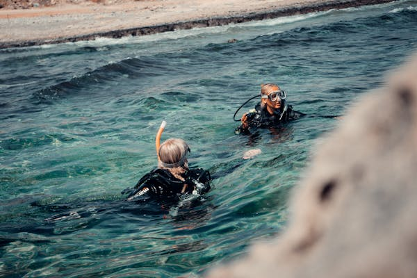
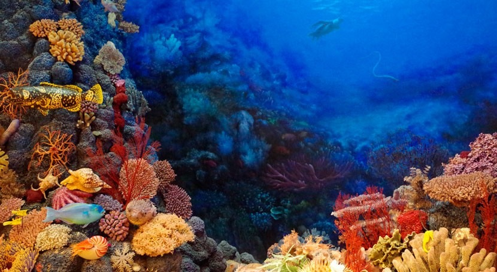
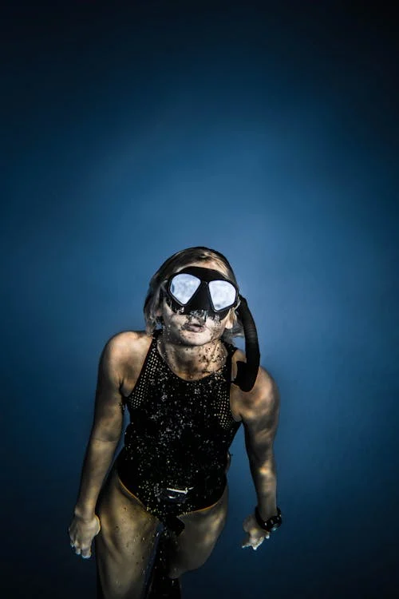
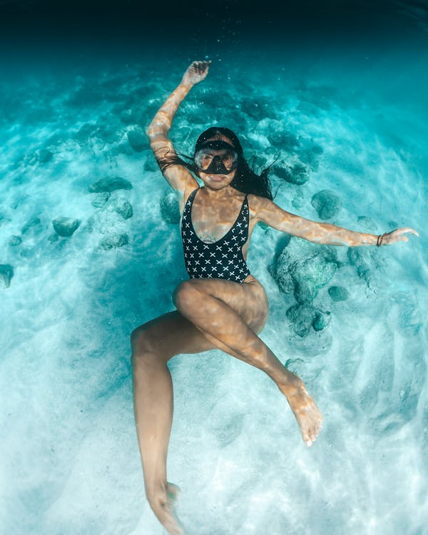
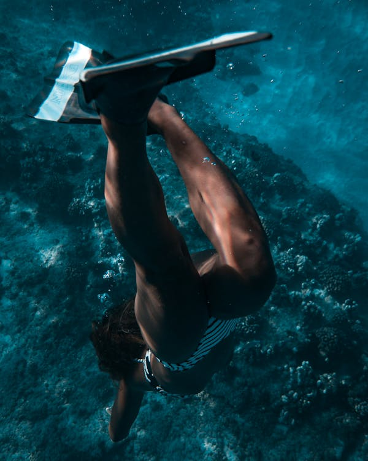

Nuestro Trabajo
Realizamos expediciones a los rincones más profundos del océano, estudiando la biodiversidad y registrando cada descubrimiento con tecnología avanzada.



Descubre quiénes somos y nuestra pasión por la exploración submarina.
Somos un equipo apasionado por el océano. Desde hace años, nos dedicamos a la exploración submarina, documentando la vida marina y promoviendo la conservación de los ecosistemas acuáticos.
Realizamos expediciones a los rincones más profundos del océano, estudiando la biodiversidad y registrando cada descubrimiento con tecnología avanzada.

Hemos explorado algunos de los ecosistemas marinos más remotos del planeta. Desde viajeros en busca de nuevas experiencias hasta investigadores que desean estudiar la biodiversidad oceánica, cada exploración con nosotros es una oportunidad para conectarse con la inmensidad del océano y su belleza inigualable."



En Wild Ocean, nos eligen aquellos que buscan más que una simple aventura: exploradores apasionados, científicos comprometidos y amantes del mar que desean descubrir sus secretos.


